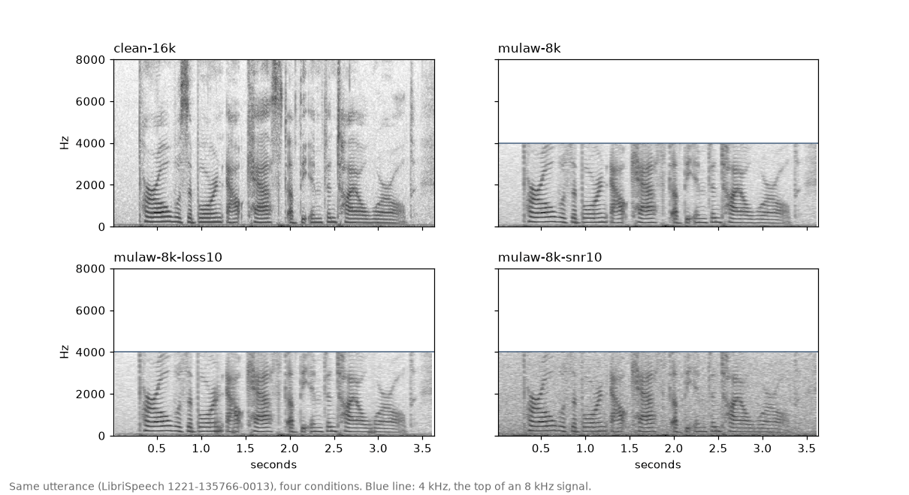
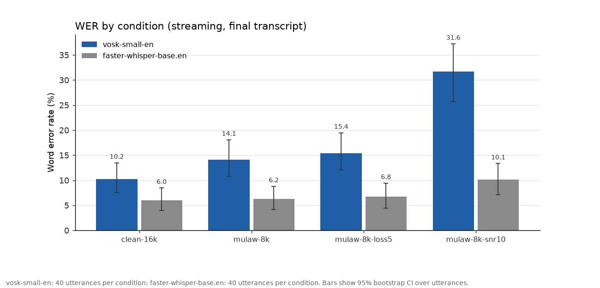
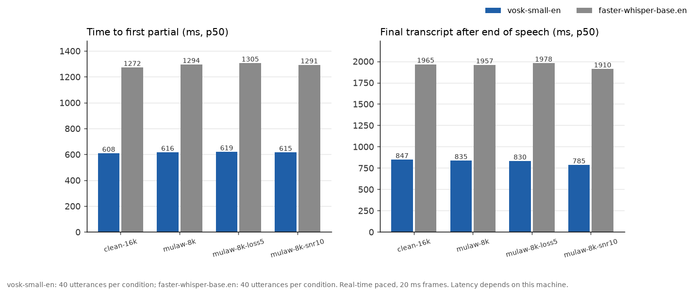
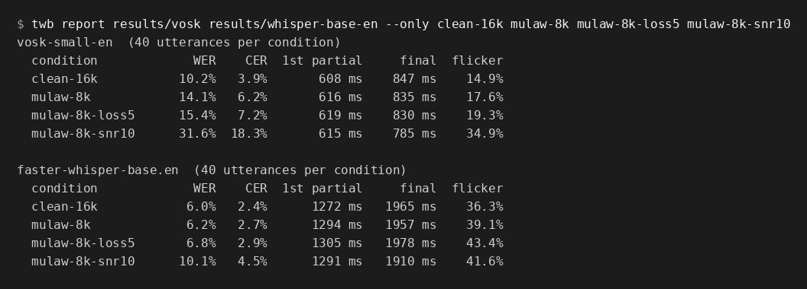

Clean 16 kHz
- Vosk WER
- 10.2%
- Whisper WER
- 6.0%
- Vosk final
- 847 ms
- Whisper final
- 1965 ms
telephony-wer-bench takes clean speech, makes it sound like a phone line, streams it to a speech-to-text service in real time, and measures how many words it got wrong and how fast it answered.
It is a Python command line tool called twb. It is for people who build voice agents on phone calls and want numbers measured on audio like theirs, not on clean 16 kHz recordings.
Results from this repo
40 LibriSpeech clips per condition, 752 words, run on one 8-CPU machine. The two providers are local models: Vosk small English, and faster-whisper base.en. This is not a ranking of hosted services.
| Condition | Vosk WER | Whisper WER | Vosk final | Whisper final |
|---|---|---|---|---|
| Clean 16 kHz | 10.2% | 6.0% | 847 ms | 1965 ms |
| 8 kHz mu-law | 14.1% | 6.2% | 835 ms | 1957 ms |
| + 5% packet loss | 15.4% | 6.8% | 830 ms | 1978 ms |
| + noise at 10 dB | 31.6% | 10.1% | 785 ms | 1910 ms |
Final is the median time to the final transcript after speech ends, about 0.8 s for Vosk and about 2 s for Whisper. Whisper does not truly stream: the bench re-decodes the growing buffer once a second, and those latency figures reflect that. 95% intervals are in the charts below. Differences smaller than those intervals on 40 clips should be read as noise.
Each clip starts clean, then is pushed closer to a real phone call. Every step uses a seed so the same condition can be run again.
The original recording, wide-band and uncompressed.
Downsampled and encoded with G.711, like a classic phone line.
5% of frames dropped, with simple concealment.
Noise mixed in at a 10 dB signal-to-noise ratio.

Most speech-to-text numbers are measured on clean, wide-band audio. A phone call is 8 kHz, compressed by G.711 or Opus, loses packets, and often has noise. Accuracy drops, and a voice agent also needs the text quickly and without it changing every few hundred milliseconds.
Checking this by hand with a few test calls is slow and hard to repeat.



twb report on the run folders in the repo.git clone https://github.com/AQIB-NAWAB/telephony-wer-bench
cd telephony-wer-bench
python -m venv .venv && source .venv/bin/activate
pip install -e ".[vosk,whisper]"
# applies the conditions to the bundled 10-clip sample
twb prepare --conditions examples/conditions.yaml --out twb-data/prepared
twb run twb-data/prepared --provider vosk --out twb-runs/vosk
twb report twb-runs/vosk --out twb-reportvoice-eval-toolkit is a sibling project. It tests how a voice agent behaves in a call: barge-in, turn gaps and latency under load. This one tests how well the speech-to-text stage hears the caller.
Early, version 0.1. It works and has tests. The sample is small and the data is English read speech from LibriSpeech (CC BY 4.0). Open source, MIT license.